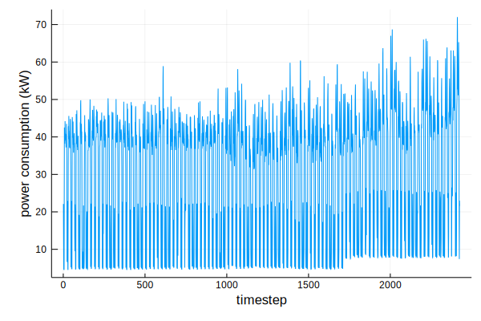
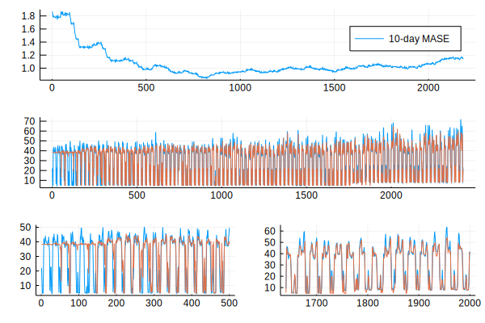

Examples
Timeseries prediction: power consumption in a gym
This example reproduces a simple upstream experiment by making 1-step-ahead predictions on a single regularly-sampled time series of a building's power consumption.
Although HTM is about modelling the brain, this example won't look into that at all and look at it simply as a predictive model.
The time series exhibits daily and weekly patterns, but also mean shifts and non-ergodicity. Here's what a small part of the time series looks like:

We'll use this data in this example. Follow along at the source
HTM model

Encoding
An HTM model doesn't understand numbers for input. It needs large binary vectors that represent other neurons firing. These are called Sparse Distributed Representations (SDRs). Transforming input data into SDRs is called encoding and the important point is to maintain the semantics of the input space under this transformation: if 3.1kW is considered to be very similar to 3.2kW, then the corresponding SDRs should also be very similar. Correspondingly the SDR for 5kW should probably have no similarity.
So what is SDR similarity? As binary vectors, "similarity" is how many 1s they have at the same places, or, the inner product of 2 SDRs, or bitwise(AND) then reduce(+).
similarity(x,y)= sum(x .& y);
A= [0,0,1,0,1,0,1,0];
B= [0,0,1,0,0,0,1,0];
similarity(A,B)
C= [1,1,1,0,0,1,0,1];
similarity(A,C)1In this case the encoder is [encode_simpleArithmetic] and linearly maps a range of real numbers [a,b] to shifting bit patterns within a fixed length SDR. If the range is [0,1], it could look like:
0 -> 1110000000
0.2 -> 0011100000
...
1 -> 0000000111Spatial Pooler
The SpatialPooler is a learning algorithm that decorrelates the features of an input space, producing a Sparse Distributed Representation (SDR) of the input space.
It's called SpatialPooler because input patterns that share a large number of co-active neurons (i.e., that are spatially similar) are grouped together into a common output representation. It is designed to achieve a set of computational properties that support further downstream computations with SDRs, including:
- preserving topology of the input space by mapping similar inputs to similar outputs
- continuously adapting to changing statistics of the input stream
- forming fixed sparsity representations
- being robust to noise
- being fault tolerant
We can evaluate the "mapping property" of the spatial pooler, or if it manages to represent the similarities of the input space in the output:

Temporal memory
After the SDRs have been normalized comes the contextualizing and predictive step, the TemporalMemory. The TemporalMemory learns to predict sequences of input SDRs. It represents each input symbol in the temporal context of the symbols that come before it in the sequence and predicts its own activation in the following time step.
This prediction is the TM's output, another SDR that we must decode to bring it back out from the model's internal representation. Decoding however is more complicated than encoding, because the only information we have to associate the TM's activations with the input symbols is that they represent the input symbol in a temporal context. What might help us is discovering a function that maps internal representations to the input symbols that they should represent.
We can train a simple learning algorithm (eg 1-layer neural network) to decode the TM, by using the actual encodings as ground truth. If we want to predict k time steps into the future, then at time t we update the learning algorithm with error signal
$e_t = D(Π_{t-k}) - u_t$
where Π is the TM's prediction, an SDR, D(Π) is the decoding of the prediction, and u is the input.
Here, the decoder SDRClassifier actually outputs a probability distribution over all the encoder's classes.
Prediction results

- Blue: original time series
- Red: prediction 1 step ahead
To make the prediction above proper dimensions were chosen for the algorithms, but their various tuning parameters weren't tuned a lot. The error metric is MASE, calculated on a 10-day sliding window.
The learning parts of the system are:
- Spatial Pooler
- Temporal Memory
- Decoder
In this example they're all learning simultaneously, but the spatial pooler's learning can be considered an optimization. The important learning components are the temporal memory and the deoder.
Before the system has learned anything the decoder outputs a more or less static value in the middle of the encoding range. Gradually, the most frequent patterns of the time series start being recognised: the daily fluctuations. Weekends take more time, as what counts is the number of times a pattern has been seen. But is the prediction good in any case?
After about 600 steps the HTM model does a bit better than simply predicting the current value for the next value and starts hitting the daily peaks. From step 1200 on the frequency of small unpredictable events increases and the accuracy starts dropping. However the mean shift at 1750 is handled gracefully and doesn't increase the error further. The HTM adapts to the new statistics.